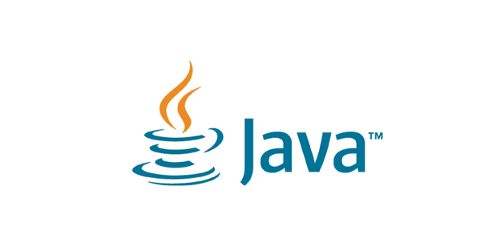

CAS 深入理解。
摘要
最近在工作中，出现了一个接口请求时间较长的情况。但是我了解的java自带的工具，并不能很好的显示整个接口耗时的具体情况。最后也是在github上找到了一个阿里大神写的sh脚本，这个脚本，是用java写的，做了很好的classloader的隔离，并且，很轻量，占用资源很少，安装简便，耗时分析更佳之直观。
安装步骤
- 首先进入进入安装目录
- 安装
curl -sLk http://ompc.oss.aliyuncs.com/greys/install.sh|sh
- 开启greys服务
./greys
[@IP:PORT] - 进入greys服务后，进行想要的操作，greys相关命令：如下
命令 说明 help 查看命令的帮助文档，每个命令和参数都有很详细的说明 sc 查看JVM已加载的类信息 sm 查看已加载的方法信息 monitor 方法执行监控 trace 渲染方法内部调用路径，并输出方法路径上的每个节点上耗时 ptrace 方强化版的trace命令。通过指定渲染路径，并可记录下路径中所有方法的入参、返值；与tt命令联动。 watch 方法执行数据观测 tt 方法执行数据的时空隧道，记录下指定方法每次调用的入参和返回信息，并能对这些不同的时间下调用进行观测 stack 输出当前方法被调用的调用路径 version 输出当前目标Java进程所加载的Greys版本号 quit 退出greys客户端 shutdown 关闭greys服务端 reset 重置增强类，将被greys增强过的类全部还原 jvm 查看当前JVM的信息
官方github:https://github.com/oldmanpushcart/greys-anatomy/wiki/Getting-Started